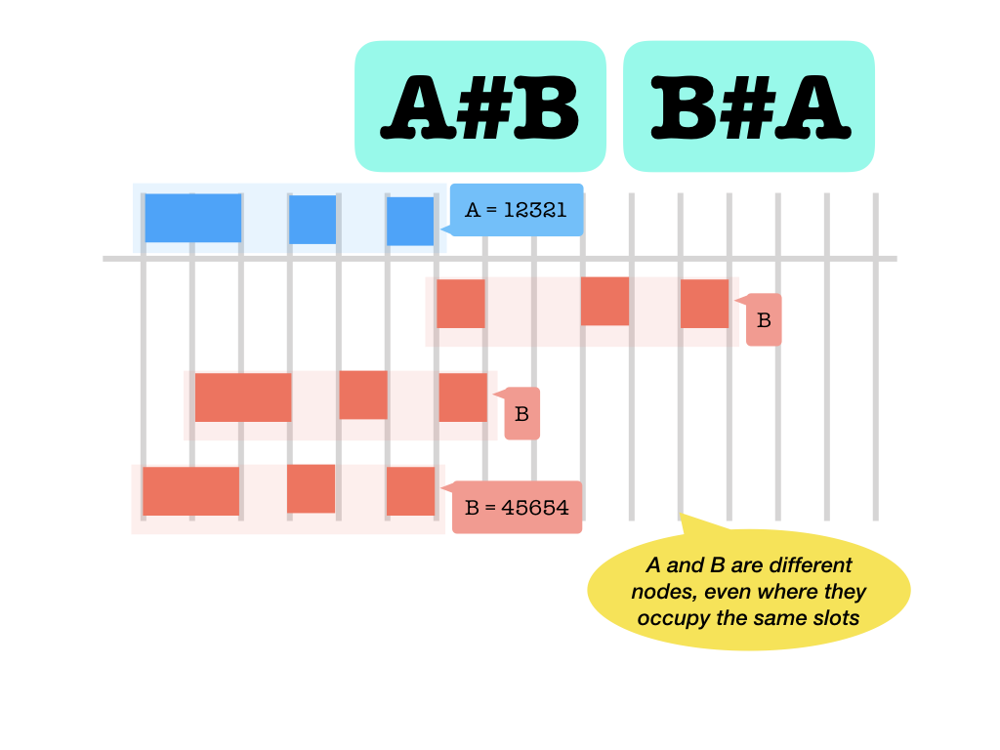
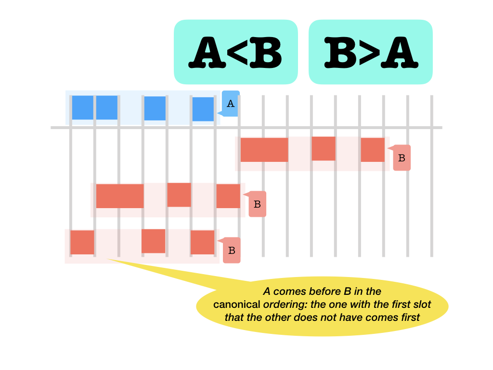
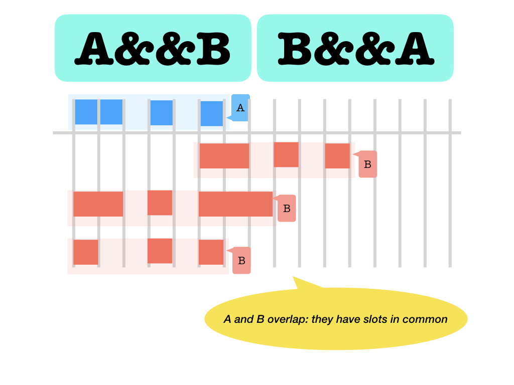
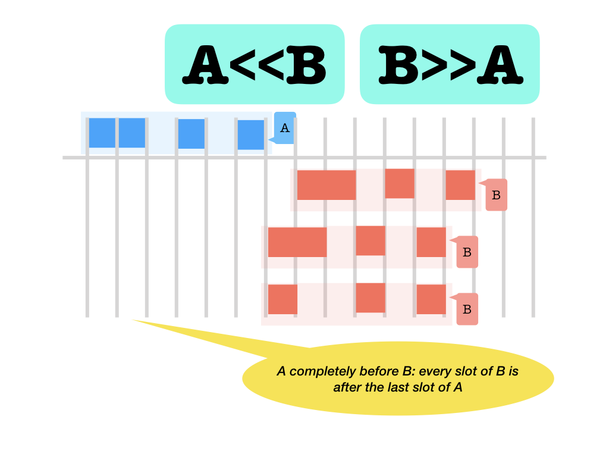
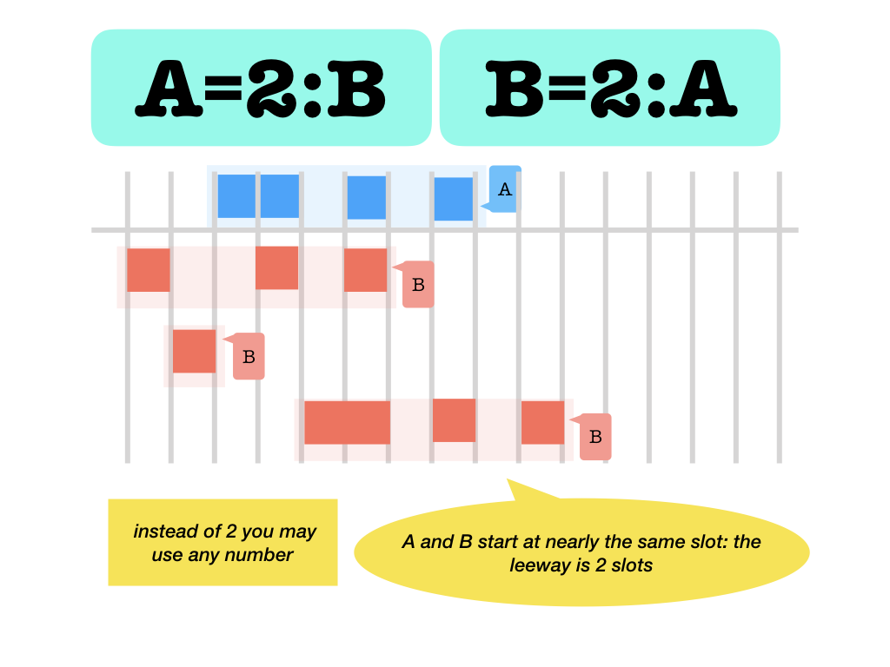
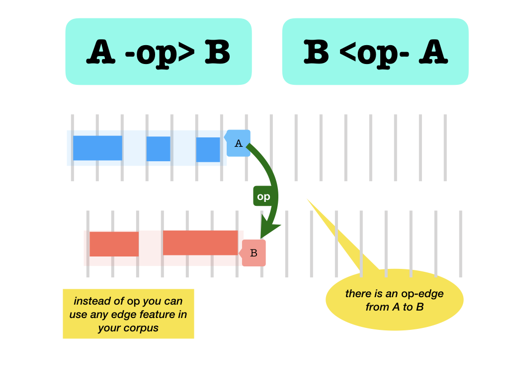
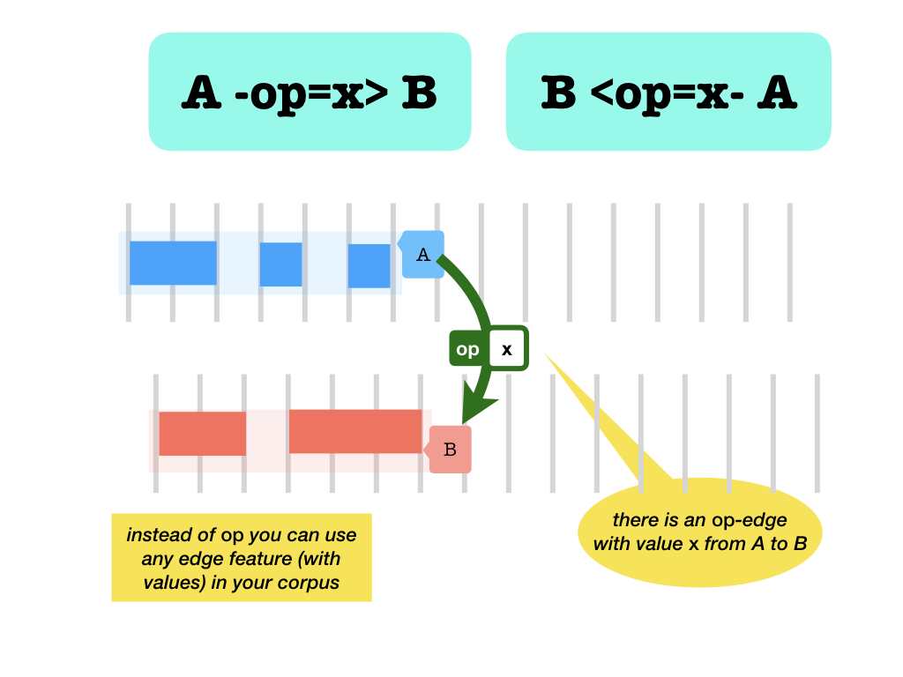

Text-Fabric API¶
Tutorial
The tutorials for the Hebrew Bible and the Uruk Cuneiform Tablets put the Text-Fabric API on show for two distinguished (and vastly distinct) corpora.
Generic API
This is the API of Text-Fabric in general. Text-Fabric has no baked in knowledge of particular corpora.
However, Text-Fabric comes with several additions that make working with specific corpora easier.
Loading¶
TF=Fabric()
1 2 | from tf.fabric import Fabric TF = Fabric(locations=directories, modules=subdirectories, silent=False) |
Description
Text-Fabric is initialized for a corpus. It will search a set of directories
and catalog all .tf files it finds there.
These are the features you can subsequently load.
Here directories and subdirectories are strings with directory names
separated by newlines, or iterables of directories.
locations, modules
The directories specified in locations will be searched for modules, which
are paths that will be appended to the paths in locations.
All .tf files (non-recursively) in any module will be added to the feature
set to be loaded in this session. The order in modules is important, because
if a feature occurs in multiple modules, the last one will be chosen. In this
way you can easily override certain features in one module by features in an
other module of your choice.
otext@ in modules
If modules contain features with a name starting with otext@, then the format
definitions in these features will be added to the format definitions in the
regular otext feature (which is a WARP feature). In this way, modules that
define new features for text representation, also can add new formats to the
Text-API.
Defaults
The locations list has a few defaults:
1 2 3 | ~/Downloads/text-fabric-data ~/text-fabric-data ~/github/text-fabric-data |
So if you have stored your main Text-Fabric dataset in
text-fabric-data in one of these directories
you do not have to pass a location to Fabric.
The modules list defaults to ['']. So if you leave it out, Text-Fabric will
just search the paths specified in locations.
silent
If silent=True is passed, banners and normal progress messages are suppressed.
TF.explore()
1 2 | features = TF.explore(silent=False, show=True) features |
or
1 2 | TF.explore(silent=False, show=False) TF.featureSets |
Description
This will give you a dictionary of all available features by kind. The kinds are: nodes, edges, configs, computeds.
silent
With silent=False a message containing the total numbers of features is issued.
show
The resulting dictionary is delivered in TF.featureSets, but if you say
show=True, the dictionary is returned as function result.
api=TF.load()
1 | api = TF.load(features, add=False, silent=False) |
Description
Reads the features indicated by features and loads them in memory
ready to be used in the rest of the program.
features
features is a string containing space separated feature names, or an
iterable of feature names. The feature names are just the names of .tf files
without directory information and without extension.
add
If later on you want load more features, you can either:
- add the features to the original
load()statement and just run it again - make a new statement:
TF.load(newfeatures, add=True). The new features will be added to the same api, so you do not have to to callapi.makeAvailableIn(globals())again after this!
silent
The features will be loaded rather silently, most messages will be suppressed.
Time consuming operations will always be announced, so that you know what
Text-Fabric is doing. If silent=True is passed, all informational messages
will be suppressed. This is handy I you want to load data as part of other
methods, on-the-fly.
api.makeAvailableIn(globals())
1 | api.makeAvailableIn(globals()) |
Description
This method will export every member of the API (such as N, F, E, L, T,
info) to the global namespace. From now on, we will omit the api. in our
documentation.
Contents of the API
After having loaded the features by api = TF.load(...), the api harbours
your Text-Fabric API. You can access node feature mydata by api.F.mydata.v(node), edge
feature mylink by api.E.mylink.f(node), and so on.
If you are working with a single data source in your program, it is a bit
tedious to write the initial api. all the time.
By this methodd you can avoid that.
Longer names
There are also longer names which can be used as aliases to the single capital letters. This might or might not improve the readability of your program.
| short name | long name |
|---|---|
N | Nodes |
F | Feature |
Fs | FeatureString |
Fall | AllFeatures |
E | Edge |
Es | EdgeString |
Eall | AllEdges |
C | Computed |
Cs | ComputedString |
Call | AllComputeds |
L | Locality |
T | Text |
S | Search |
ignored
1 | api.ignored |
Description
If you want to know which features were found but ignored (because the feature is also present in another, later, location), you can use this attribute to inspect the ignored features and their locations.
loadLog()
1 | api.loadlog() |
Description
After loading you can view all messages using this method.
It also shows the messages that have been suppressed due to silent=True.
Navigating nodes¶
N()
1 2 | for n in N(): action |
Description
The result of N() is a generator that walks through all nodes in the
canonical order (see below).
Iterating over N() delivers you all words and structural elements of
your corpus in a very natural order.
Walking nodes
Most processing boils down to walking through the nodes by visiting node sets in a suitable order. Occasionally, during the walk you might want to visit embedding or embedded nodes to glean some feature information from them.
More ways of walking
Later, under Features there is another convenient way to walk through nodes.
canonical order
The canonical order is a way to sort the nodes in your corpus in such a way that you can enumerate all nodes in the order you encounter them if you walk through your corpus.
Briefly this means:
- embedder nodes come before the nodes that lie embedded in them;
- earlier stuff comes before later stuff,
- if a verse coincides with a sentence, the verse comes before the sentence, because verses generally contain sentences and not the other way round;
- if two objects are intersecting, but none embeds the other, the one with the smallest slot that does not occur in the other, comes first.
first things first, big things first
That means, roughly, that you start with a book node (Genesis), then a chapter node (Genesis 1), then a verse node, Genesis 1:1, then a sentence node, then a clause node, a phrase node, and the first word node. Then follow all word nodes in the first phrase, then the phrase node of the second phrase, followed by the word nodes in that phrase. When ever you enter a higher structure, you will first get the node corresponding to that structure, and after that the nodes corresponding to the building blocks of that structure.
This concept follows the intuition that slot sets with smaller elements come before slot set with bigger elements, and embedding slot sets come before embedded slot sets. Hence, if you enumerate a set of nodes that happens to constitute a tree hierarchy based on slot set embedding, and you enumerate those nodes in the slot set order, you will walk the tree in pre-order.
This order is a modification of the one as described in (Doedens 1994, 3.6.3).

Doedens, Crist-Jan (1994), Text Databases. One Database Model and Several Retrieval Languages, number 14 in Language and Computers, Editions Rodopi, Amsterdam, Netherlands and Atlanta, USA. ISBN: 90-5183-729-1, http://books.google.nl/books?id=9ggOBRz1dO4C. The order as defined by Doedens corresponds to walking trees in post-order.
For a lot of processing, it is handy to have a the stack of embedding elements available when working with an element. That is the advantage of pre-order over post-order. It is very much like SAX parsing in the XML world.
sortNodes()
1 | sortNodes(nodeSet) |
Description
delivers an iterable of nodes as a tuple sorted by the canonical ordering.
nodeSet
An iterable of nodes to be sorted.
sortKey
1 | nodeList = sorted(nodes, key=sortKey) |
Description
A function that provides for each node the key to be used to sort nodes in the canonical ordering. That means that the following two pieces of code do the same thing:
sortNodes(nodeSet) and sorted(nodeSet, key=sortKey).
Sorting tuples of nodes
Handy to sort things that are not nodes themselves, but data structures with
nodes in it, e.g. search results: if results is a list of tuples of nodes, we
could sort them in canonical order like this:
1 | sorted(nodeSet, key=lambda r: sortKey(r[0])) |
Locality¶
Local navigation
Here are the methods by which you can navigate easily from a node to its neighbours: parents and children, previous and next siblings.
L
The Locality API is exposed as L or Locality.
otype parameter
In all of the following L-functions, if the otype parameter is passed, the result is filtered and
only nodes with otype=nodeType are retained.
Results of the L. functions are tuples, not single nodes
Even if an L-function returns a single node, it is packed in a tuple.
So to get the node itself, you have to dereference the tuple:
1 | L.u(node)[0] |
L.u()
1 | L.u(node, otype=nodeType) |
Description
Produces an ordered tuple of nodes upward, i.e. embedder nodes.
node
The node whose embedder nodes will be delivered.
The result never includes node itself.
L.d()
1 | L.d(node, otype=nodeType) |
Description
Produces an ordered tuple of nodes downward, i.e. embedded nodes.
node
The node whose embedded nodes will be delivered.
The result never includes node itself.
L.n()
1 | L.n(node, otype=nodeType) |
Description
Produces an ordered tuple of adjacent next nodes.
node
The node whose right adjacent nodes will be delivered;
i.e. the nodes whose first slot immediately follow the last slot
of node.
The result never includes node itself.
L.p()
1 | L.p(node, otype=nodeType) |
Description
Produces an ordered tuple of adjacent previous nodes from node, i.e. nodes
whose last slot just precedes the first slot of node.
Description
Produces an ordered tuple of adjacent previous nodes.
node
The node whose lefy adjacent nodes will be delivered;
i.e. the nodes whose last slot immediately precede the first slot
of node.
Locality and levels
Here is something that is very important to be aware of when using sortNodes
and the L.d(n) and L.u(n) methods.
When we order nodes and report on which nodes embed which other nodes, we do not only take into account the sets of slots the nodes occupy, but also their level. See levels and text.
Both the L.d(n) and L.u(n) work as follows:
L.d(n)returns nodes such that embedding nodes come before embedded nodes words)L.u(n)returns nodes such that embedded nodes come before embedding nodes books)
N.B.: Suppose you have node types verse and sentence, and usually a
verse has multiple sentences, but not vice versa. Then you expect that
L.d(verseNode)will contain sentence nodes,L.d(sentenceNode)will not contain verse nodes.
But if there is a verse with exactly one sentence, and both have exactly the same words, then that is a case where:
L.d(verseNode)will contain one sentence node,L.d(sentenceNode)will contain one verse node.
Text¶
Overview
Here are the functions that enable you to get the actual text in the dataset. There are several things to accomplish here, such as
- getting text given book, chapter, and verse;
- given a node, produce the book, chapter and verse indicators in which the node is contained;
- handle multilingual book names;
- switch between various text representations.
The details of the Text API are dependent on the warp feature otext, which
is a config feature.
T
The Text API is exposed as T or Text.
Sections¶
Section levels
In otext the main section levels (usually book, chapter, verse) can be
defined. It loads the features it needs (so you do not have to specify those
features, unless you want to use them via F). And finally, it makes some
functions available by which you can make handy use of that information.
Section levels are generic
In this documentation, we call the main section level book, the second level
chapter, and the third level verse. Text-Fabric, however, is completely
agnostic about how these levels are called. It is prepared to distinguish three
section levels, but how they are called, must be configured in the dataset. The
task of the otext feature is to declare which node type and feature correspond
with which section level. Text-Fabric assumes that the first section level may
have multilingual headings, but that section levels two and three have single
language headings (numbers of some kind).
String versus number
Chapter and verse numbers will be considered to be strings or
integers, depending on whether your dataset has declared the corresponding
feature valueType as str or as int.
Conceivably, other works might have chapter and verse numbers
like XIV, '3A', '4.5', and in those cases these numbers are obviously not
ints.
otext is optional
If otext is missing, the Text API will not be build. If it exists, but
does not specify sections, that part of the Text API will not be built. Likewise
for text representations.
levels of node types
Usually, Text-Fabric computes the hierarchy of node types correctly, in the
sense that node types that act as containers have a lower level than node types
that act as containees. So books have the lowest level, words the highest. See
levels. However, if this level assignment turns out to be wrong for
your dataset, you can configure the right order in the otext feature, by means
of a key levels with value a comma separated list of levels. Example:
1 | @levels=tablet,face,column,line,case,cluster,quad,comment,sign |
T.sectionFromNode()
1 | T.sectionFromNode(node, lastSlot=False, lang='en') |
Description
Returns the book/chapter/verse indications that correspond to the reference
node, which is the first or last slot belonging n, dependent on lastSlot.
The result is a tuple, consisting of the book name (in language lang), the
chapter number, and the verse number.
node
The node from which we obtain a section specification.
lastSlot
Whether the reference node will be the last slot contained by the node argument
or the first node.
lang
The language to be used for the section parts, as far as they are language dependent.
crossing verse boundaries
Sometimes a sentence or clause in a verse continue into the next verse.
In those cases, this function will return a different results for
lastSlot=False and lastSlot=True.
nodes outside sections
Nodes that lie outside any book, chapter, verse will get a None in the
corresponding members of the returned tuple.
T.nodeFromSection()
1 | T.nodeFromSection(section, lang='en') |
Description
Given a section tuple, return the node of it.
section
section consists of a book name (in language lang),
and a chapter number and a verse
number (both as strings or number depending on the value type of the
corresponding feature). The verse number may be left out, the result is then a
chapter node. Both verse and chapter numbers may be left out, the result is then
a book node. If all three are present, de result is a verse node.
lang
The language assumed for the section parts, as far as they are language dependent.
Book names and languages¶
Book names and nodes
The names of the books may be available in multiple languages. The book names
are stored in node features with names of the form book@la, where la is
the ISO 639 two-letter code for that
language. Text-Fabric will always load these features.
T.languages
1 | T.languages |
Description
A dictionary of the languages that are available for book names.
T.bookName()
1 | T.bookName(node, lang='en') |
Description
gives the name of the book in which a node occurs.
node
The node in question.
lang
The lang parameter is a two letter language code. The default is en
(English).
If there is no feature data for the language chosen, the value of the ordinary
book feature of the dataset will be returned.
Works for all nodes
n may or may not be a book node. If not, bookName() retrieves the
embedding book node first.
T.bookNode()
1 | T.bookNode(name, lang='en') |
Description
gives the node of the book identified by its name
name
The name of the book.
lang
The language in which the book name is supplied by the name parameter.
If lang can not be found, the value of the ordinary book feature of the
dataset will be used.
If name cannot be found in the specified language, None will be returned.
Function name follows configured section level
If your dataset has configured section level one under an other name,
say tablet, then these two methods follow that name. Instead of T.bookName()
and T.bookNode() we have then T.tabletName() and T.tabletNode().
Text representation¶
Text formats
Text can be represented in multiple ways. We provide a number of formats with structured names.
A format name is a string of keywords separated by -:
what-how-fullness-modifier
For Hebrew any combination of the follwoing could be useful formats:
| keyword | value | meaning |
|---|---|---|
| what | text | words as they belong to the text |
| what | lex | lexemes of the words |
| how | orig | in the original script (Hebrew, Greek, Syriac) (all Unicode) |
| how | trans | in (latin) transliteration |
| how | phono | in phonetic/phonological transcription |
| fullness | full | complete with accents and all diacritical marks |
| fullness | plain | with accents and diacritical marks stripped, in Hebrew only the consonants are left |
| modifier | ketiv | (Hebrew): where there is ketiv/qere, follow ketiv instead of qere (default); |
The default format is text-orig-full, we assume that every TF dataset defines
this format.
Remember that the formats are defined in the otext warp config feature of your
set, not by Text-Fabric.
Freedom of names for formats
There is complete freedom of choosing names for text formats. They do not have to complied with the above-mentioned scheme.
T.formats
1 | T.formats |
Description
Show the text representation formats that have been defined in your dataset.
T.text()
1 | T.text(nodes, fmt=None) |
Description
Gives the text that corresponds to a bunch of nodes.
nodes
nodes can be an arbitrary iterable of nodes.
No attempt will be made to sort the nodes.
If you need order, it is
better to order the nodes before you feed them to T.text().
fmt
The format of text-representation is given with fmt, with default text-orig-full.
If the fmt
cannot be found, the default is taken.
If the default format is not defined in the
otext feature of the dataset,
the node numbers will be output instead.
This function does not give error messages, because that could easily overwhelm the output stream, especially in a notebook.
Non slot nodes allowed
In most cases, the nodes fed to T.text() are slots, and the formats are
templates that use features that are defined for slots.
But nothing prevents you to define a format for non-slot nodes, and use features defined for a non-slot node type.
If, for example, your slot type is glyph, and you want a format that renders lexemes, which are not defined for glyphs but for words, you can just define a format in terms of word features.
It is your responsibility to take care to use the formats for node types for which they make sense.
Escape whitespace in formats
When defining formats in otext.tf, if you need a newline or tab in the format,
specify it as \n and \t.
Searching¶
What is Text-Fabric Search?
You can query for graph like structures in your data set. The structure you are
interested in has to be written as a search template, offered to S.search()
which returns the matching results as tuples of nodes.
S
The Search API is exposed as S or Search.
Search templates¶
Search primer
A search template consists of a bunch of lines, possibly indented, that specify objects to look for. Here is a simple example:
1 2 3 4 5 | book name=Genesis|Exodus
chapter number=2
sentence
word pos=verb gender=feminine number=plural
word pos=noun gender=feminine number=singular
|
This template looks for word combinations within a sentence within chapter 2 of either Genesis or Exodus, where one of the words is a verb and the other is a noun. Both have a feminine inflection, but the verb is plural and the noun is singular.
The indentation signifies embedding, i.e. containment. The two words are contained in the same sentence, the sentence is contained in the chapter, the chapter in the book.
The conditions you specify on book, chapter, word are all conditions in terms of node features. You can use all features in the corpus for this.
The order of the two words is immaterial. If there are cases where the verb follows the noun, they will be included in the results.
Also, the words do not have to be adjacent. If there are cases with words intervening between the noun and the verb, they will be included in the results.
Speaking of results: the S.search() function returns its results as tuples of
nodes:
1 | (book, chapter, sentence, word1, word2) |
With these nodes in hand, you can programmatically gather all information about the results that the corpus provides.
If the order between the verb and the noun is important, you can specify that as an additional constraint. You can give the words a name, and state a relational condition. Here we state that the noun precedes the verb.
1 2 3 4 5 6 | book name=Genesis|Exodus
chapter number=2
sentence
vb:word pos=verb gender=feminine number=plural
nn:word pos=noun gender=feminine number=singular
nn < vb
|
This can be written a bit more economically as:
1 2 3 4 5 | book name=Genesis|Exodus
chapter number=2
sentence
word pos=verb gender=feminine number=plural
> word pos=noun gender=feminine number=singular
|
If you insist that the noun immediately precedes the verb, you can use a different relational operator:
1 2 3 4 5 | book name=Genesis|Exodus
chapter number=2
sentence
word pos=verb gender=feminine number=plural
:> word pos=noun gender=feminine number=singular
|
There are more kinds of relational operators.
If the noun must be the first word in the sentence, you can specify it as
1 2 3 4 5 6 | book name=Genesis|Exodus
chapter number=2
s:sentence
w:word pos=noun gender=feminine number=singular
<: word pos=verb gender=feminine number=plural
s =: w
|
or a bit more economically:
1 2 3 4 5 | book name=Genesis|Exodus
chapter number=2
sentence
=: word pos=noun gender=feminine number=singular
<: word pos=verb gender=feminine number=plural
|
If the verb must be the last word in the sentence, you can specify it as
1 2 3 4 5 6 | book name=Genesis|Exodus
chapter number=2
s:sentence
word pos=noun gender=feminine number=singular
<: w:word pos=verb gender=feminine number=plural
s := w
|
or a bit more economically:
1 2 3 4 5 6 | book name=Genesis|Exodus
chapter number=2
s:sentence
word pos=noun gender=feminine number=singular
<: word pos=verb gender=feminine number=plural
:=
|
You can also use the edge features in the corpus as relational operators as well.
Suppose we have an edge feature sub between clauses, such that if main clause
m has subordinate clauses s1, s2 and s3, then
1 | E.sub.f(m) = (s1, s2, s3) |
You can use this relation in search. Suppose we want to find the noun verb pair in subordinate clauses only. We can use this template:
1 2 3 4 5 6 7 | book name=Genesis|Exodus
chapter number=2
m:clause
s:clause
word pos=verb gender=feminine number=plural
:> word pos=noun gender=feminine number=singular
m -sub> s
|
or a bit more economically:
1 2 3 4 5 6 | book name=Genesis|Exodus
chapter number=2
clause
-sub> clause
word pos=verb gender=feminine number=plural
:> word pos=noun gender=feminine number=singular
|
Read m -sub> s as: there is a sub-arrow from m to s.
Edge features may have values. For example, the crossref feature is a set of edges between parallel verses, with the levels of confidence as values. This number is an integer between 0 and 100. We can ask for parallel verses in an unqualified way:
1 2 | verse -crossref> verse |
But we can also ask for the cases with a specific confidence:
1 2 | verse -crossref=90> verse |
or cases with a high confidence:
1 2 | verse -crossref>95> verse |
or cases with a low confidence:
1 2 | verse -crossref<80> verse |
All feature conditions that you can assert on node features, you can also
assert for edge features. If an edge feature is integer valued, such as crossref
you can use comparisons; if it is string valued, you can use regular expressions.
In both cases you can also use the other constructs, such as
1 2 | verse -crossref=66|77> verse |
To get a more specific introduction to search, consult the search tutorials for Hebrew and Cuneiform.
Search template reference
General
We have these kinds of lines in a template:
- comment lines
- If a line starts with
#it is ignored. - You cannot comment out parts of lines, only whole lines.
- If a line starts with
- atom lines
- (simple): indent name:otype features
vb:word pos=verb gender=feminine- The indent is significant. Indent is counted as the number of white space characters, where tabs count for just 1. Avoid tabs!.
- The name: part is optional.
- (with relop): indent op name:otype features
<: word pos=verb gender=feminine- The relation operator specifies an extra constraint between a preceding atom and this atom.
- The preceding atom may be the parent, provided we are at its first child, or it may the preceding sibling.
- You can leave out the name:otype features bit. In that case, the relation holds between the preceding atom and its parent.
- (simple): indent name:otype features
- feature lines: features
- Indent is not significant. Continuation of feature constraints after a preceding atom line or other feature line. This way you can divide lengthy feature constraints over multiple lines.
- relation lines: name operator name
s := wm -sub> sm <sub- s- Indents and spacing are ignored.
- There must be white-space around the operator.
- Operators that come from edge features may be enriched with values. See below.
- white-space or empty lines
- Everywhere allowed.
- Always ignored.
Features
The features above is a specification of what features with which values to search for. This specification must be written as a white-space separated list of feature specs.
A feature spec has the form name valueSpec, with no space between the name and the valueSpec. The valueSpec may have the following forms:
| form | meaning |
|---|---|
feature name may have any value except None | |
! | feature name must have value None (synonymous for: name has no value) |
=values | feature name has one of the values specified |
>value | feature name must be greater than value |
<value | feature name must be less than value |
~regular expression | feature name has a value and it matches regular expression |
All these forms are also valid as -name form> and <name form-, in which case
they specify value constraints on edge features.
This is only meaningful if the edge feature is declared to have values (most edge features
do not have values).
Additional constraints
- There may be no space around the
=, nor the~. - name must be a feature name that exists in the dataset. If it references a feature that is not yet loaded, the feature will be loaded automatically.
- values must be a
|separated list of feature values, no quotes. No spaces around the|. If you need a space or|or\in a value, escape it by a\. Escape tabs and newlines as\tand\n. - When comparing values with
<and>:- value must be an integer (negative values allowed);
- You can do numeric comparisons only on number-valued features, not on string-valued features.
- regular expression must be a string that conforms to the Python
regular axpression syntax
- If that syntax prescribes a
\, you have to write it twice:\\. - If you need a space in your regular expression, you have to escape it with a
\. - You can do regular expressions only on string-valued features, not on number-valued features.
- If that syntax prescribes a
Relational operators¶
Operator lines
Node comparison
=: is equal (meaning the same node, a clause and a verse that occupy the same slots are still unequal)
#: is unequal (meaning a different node, a clause and a verse that occupy the same slots are still unequal) <>: before and after (in the canonical ordering) 
Slot comparison
==: occupy the same slots (identical slot sets)
&&: overlap (the intersection of both slot sets is not empty) ##: occupy different slots (but they may overlap, the set of slots of the two are different as sets)
||: occupy disjoint slots (no slot occupied by the one is also occupied by the other)
[[ ]]: embeds and contains (slot set inclusion, in both directions)
<<>>: before and after (with respect to the slots occupied: left ends before right starts and vice versa) <::>: adjacent before and after (with respect to the slots occupied: left ends immediately before right starts and vice versa)
=:left and right start at the same slot
:=left and right end at the same slot
::left and right start and end at the same slot
Nearness comparison
Some of the adjacency relations can actually be weakened. Instead of requiring
that one slot is equal to an other slot, you can require that they are k-near,
i.e. they are at most k apart. Here are the relationships where you can do
that. Instead of typing the letter k, provide the actual number you want.
<k::k>:k-adjacent before and after (with respect to the slots occupied: left endsk-near where right starts and vice versa)
=k:left and right start atk-near slots :k=left and right end atk-near slots
:k:left and right start and end atk-near slots
Based on edge features
-name><name-: connected by the edge feature name- in both directions;
- these forms work for edges that do and do not have values;

-name valueSpec><name valueSpec-: connected by the edge feature name*- in both directions;
- these forms work only for edges that do have values.

S.relationsLegend
1 | S.relationsLegend |
Description
Gives dynamic help about the basic relations that you can use in your search template. It includes the edge features that are available in your dataset.
S.search()
1 | S.search(searchTemplate, limit=None) |
Description
Searches for combinations of nodes that together match a search template. This method returns a generator which yields the results one by one. One result is a tuple of nodes, where each node corresponds to an atom-line in your search template.
searchTemplate
The search template is a string that conforms to the rules described above.
limit
If limit is a number, it will fetch only that many results.
Generator versus tuple
If limit is specified, the result is not a generator but a tuple of results.
More info on the search plan
Searching is complex. The search template must be parsed, interpreted, and translated into a search plan. The following methods expose parts of the search process, and may provide you with useful information in case the search does not deliver what you expect.
see the plan
the method S.showPlan() below shows you at a glance the correspondence
between the nodes in each result tuple and your search template.
S.study()
1 | S.study(searchTemplate, strategy=None, silent=False) |
Description
Your search template will be checked, studied, the search space will be narrowed down, and a plan for retrieving the results will be set up.
searchTemplate
The search template is a string that conforms to the rules described above.
strategy
In order to tame the performance of search, the strategy by which results are fetched matters a lot. The search strategy is an implementation detail, but we bring it to the surface nevertheless.
To see the names of the available strategies, just call
S.study('', strategy='x') and you will get a list of options reported to
choose from.
Feel free to experiment. To see what the strategies do, see the code.
silent
If you want to suppress most of the output, say silent=True.
S.showPlan()
1 | S.showPlan(details=False) |
Description
Search results are tuples of nodes and the plan shows which part of the tuple corresponds to which part of the search template.
details
If you say details=True, you also get an overview of the search space and a
description of how the results will be retrieved.
after S.study()
This function is only meaningful after a call to S.study().
Search results¶
Preparation versus result fetching
The method S.search() above combines the interpretation of a given
template, the setting up of a plan, the constraining of the search space
and the fetching of results.
Here are a few methods that do actual result fetching.
They must be called after a previous S.search() or S.study().
S.count()
1 | S.count(progress=None, limit=None) |
Description
Counts the results, with progress messages, optionally up to a limit.
progress
Every so often it shows a progress message.
The frequency is progress results, default every 100.
limit
Fetch results up to a given limit, default 1000.
Setting limit to 0 or a negative value means no limit: all results will be
counted.
why needed
You typically need this in cases where result fetching turns out to be (very) slow.
generator versus list
len(S.results()) does not work, because S.results() is a generator
that delivers its results as they come.
S.fetch()
1 | S.fetch(limit=None) |
Description
Finally, you can retrieve the results. The result of fetch() is not a list of
all results, but a generator. It will retrieve results as long as they are
requested and their are still results.
limit
Tries to get that many results and collects them in a tuple.
So if limit is not None, the result is a tuple with a known length.
Iterating over the fetch() generator
You typically fetch results by saying:
1 2 3 4 | i = 0 for r in S.results(): do_something(r[0]) do_something_else(r[1]) |
Alternatively, you can set the limit parameter, to ask for just so many
results. They will be fetched, and when they are all collected, returned as a
tuple.
Fetching a limited amount of results
1 | S.fetch(limit=10) |
gives you the first bunch of results quickly.
S.glean()
1 | S.glean(r) |
Description
A search result is just a tuple of nodes that correspond to your template, as
indicated by showPlan(). Nodes give you access to all information that the
corpus has about it.
The glean() function is here to just give you a first impression quickly.
r
Pass a raw result tuple r, and you get a string indicating where it occurs,
in terms of sections,
and what text is associated with the results.
Inspecting results
1 2 | for result in S.fetch(limit=10): print(S.glean(result)) |
is a handy way to get an impression of the first bunch of results.
Universal
This function works on all tuples of nodes, whether they have been obtained by search or not.
Node features¶
Node Features
F
The node features API is exposed as F (Fs) or Feature (FeatureString).
Fall() aka AllFeatures()
1 2 | Fall() AllFeatures() |
Description
Returns a sorted list of all usable, loaded node feature names.
F.feature aka Feature.feature
1 2 | F.part_of_speech Feature.part_of_speech |
Description
Returns a sub-api for retrieving data that is stored in node features.
In this example, we assume there is a feature called
part_of_speech.
Tricky feature names
If the feature name is not
a valid python identifier, you can not use this function,
you should use Fs instead.
Fs(feature) aka FeatureString(feature)
1 2 3 4 | Fs(feature) FeatureString(feature) Fs('part-of-speech') FeatureString('part-of-speech') |
Description
Returns a sub-api for retrieving data that is stored in node features.
feature
In this example, in line 1 and 2, the feature name is contained in
the variable feature.
In lines 3 and 4,
we assume there is a feature called
part-of-speech.
Note that this is not a valid name in Python, yet we
can work with features with such names.
Both methods have identical results
Suppose we have just issued feature = 'pos'.
Then the result ofFs(feature)andF.pos` is identical.
In most cases F works just fine, but Fs is needed in two cases:
- if we need to work with a feature whose name is not a valid Python name;
- if we determine the feature we work with dynamically, at run time.
Simple forms
In the sequel we'll give examples based on the simple form only.
F.feature.v(node)
1 | F.part_of_speech.v(node) |
Description
Get the value of a feature, such as part_of_speech for a node.
node
The node whose value for the feature is being retrieved.
F.feature.s(value)
1 2 | F.part_of_speech.s(value) F.part_of_speech.s('noun') |
Description
Returns a generator of all nodes in the canonical order with a given value for a given feature.
This is an other way to walk through nodes than using N().
value
The test value: all nodes with this value are yielded, the others pass through.
nouns
The second line gives you all nodes which are nouns according to the corpus.
F.`feature.freqList()
1 | F.part_of_speech.freqList(nodeTypes=None) |
Description
Inspect the values of feature (in this example: part_of_speech)
and see how often they occur. The result is a
list of pairs (value, frequency), ordered by frequency, highest frequencies
first.
nodeTypes
If you pass a set of nodeTypes, only the values for nodes within those types will be counted.
F.otype
otype is a special node feature and has additional capabilities.
Description
F.otype.slotTypeis the node type that can fill the slots (usually:word)F.otype.maxSlotis the largest slot numberF.otype.maxNodeis the largest node numberF.otype.allis a list of all otypes from big to small (from books through clauses to words)F.otype.sInterval(otype)is likeF.otype.s(otype), but instead of returning you a range to iterate over, it will give you the starting and ending nodes ofotype. This makes use of the fact that the data is so organized that all node types have single ranges of nodes as members.
Edge features¶
Edge Features
E
The edge features API is exposed as E (Es) or Edge (EdgeString).
Eall() aka AllEdges()
1 2 | Eall() AllEdges() |
Description
Returns a sorted list of all usable, loaded edge feature names.
E.feature aka Edge.feature
1 2 | E.head Feature.head |
Description
Returns a sub-api for retrieving data that is stored in edge features.
In this example, we assume there is a feature called
head.
Tricky feature names
If the feature name is not
a valid python identifier, you can not use this function,
you should use Es instead.
Es(feature) aka EdgeString(feature)
1 2 3 4 | Es(feature) EdgeString(feature) Es('head') EdgeString('head') |
Description
Returns a sub-api for retrieving data that is stored in edge features.
feature
In this example, in line 1 and 2, the feature name is contained in
the variable feature.
In lines 3 and 4,
we assume there is a feature called
head.
Both methods have identical results
Suppose we have just issued feature = 'head'.
Then the result ofEs(feature)andE.pos` is identical.
In most cases E works just fine, but Es is needed in two cases:
- if we need to work with a feature whose name is not a valid Python name;
- if we determine the feature we work with dynamically, at run time.
Simple forms
In the sequel we'll give examples based on the simple form only.
E.feature.f(node)
1 | E.head.f(node) |
Description
Get the nodes reached by feature-edges from a certain node.
These edges must be specified in feature, in this case head.
The result is an ordered tuple
(again, in the canonical order. The members of the
result are just nodes, if head describes edges without values. Otherwise
the members are pairs (tuples) of a node and a value.
If there are no edges from the node, the empty tuple is returned, rather than None.
node
The node from which the edges in question start.
E.feature.t(node)
1 | E.head.t(node) |
Description
Get the nodes reached by feature-edges to a certain node.
These edges must be specified in feature, in this case head.
The result is an ordered tuple
(again, in the canonical order. The members of the
result are just nodes, if feature describes edges without values. Otherwise
the members are pairs (tuples) of a node and a value.
If there are no edges to n, the empty tuple is returned, rather than None.
node
The node to which the edges in question go.
E.feature.freqList()
1 | E.op.freqList(nodeTypesFrom=None, nodeTypesTo=None) |
Description
If the edge feature has no values, simply return the number of node pairs between an edge of this kind exists.
If the edge feature does have values, we
inspect them
and see how often they occur. The result is a
list of pairs (value, frequency), ordered by frequency, highest frequencies
first.
nodeTypesFrom
If not None,
only the values for edges that start from a node with type
within nodeTypesFrom
will be counted.
nodeTypesTo
If not None,
only the values for edges that go to a node with type
within nodeTypesTo
will be counted.
E.oslots
oslots is a special edge feature and is mainly used to construct other parts
of the API. It has less capabilities, and you will rarely need it. It does not
have .f and .t methods, but an .s method instead.
Description
E.oslots.s(node)
Gives the sorted list of slot numbers linked to a node,
or put otherwise: the slots that support that node.
node
The node whose slots are being delivered.
Messaging¶
Timed messages
Error and informational messages can be issued, with a time indication.
info(), error()
1 | info(msg, tm=True, nl=True) |
Description
Sends a message to standard output, possibly with time and newline.
if info() is being used, the message is sent to stdout;
if error() is being used, the message is sent to stderr;
In a Jupyter notebook, the standard error is displayed with a reddish background colour.
tm
If True, an indicator of the elapsed time will be prepended to the message.
nl
If True a newline will be appended.
indent()
1 | indent(level=None, reset=False) |
Description
Changes the level of indentation of messages and possibly resets the time.
level
The level of indentation, an integer. Subsequent
info() and error() will display their messages with this indent.
reset
If True, the elapsed time to will be reset to 0 at the given level.
Timers at different levels are independent of each other.
Saving features¶
TF.save()
1 | TF.save(nodeFeatures={}, edgeFeatures={}, metaData={}, module=None) |
Description
If you have collected feature data in dictionaries, keyed by the
names of the features, and valued by their feature data,
then you can save that data to .tf feature files on disk.
It is this easy to export new data as features:
collect the data and metadata of
the features and
feed it in an orderly way to TF.save() and there you go.
nodeFeatures
The data of a node feature is a dictionary with nodes as keys (integers!) and strings or numbers as (feature) values.
edgeFeatures
The data of an edge feature is a dictionary with nodes as keys, and sets or dictionaries as values. These sets should be sets of nodes (integers!), and these dictionaries should have nodes as keys and strings or numbers as values.
metadata
Every feature will receive metadata from metaData, which is a dictionary
mapping a feature name to its metadata.
value types
The type of the values should conform to @valueType (int or str), which
must be stated in the metadata.
edge values
If you save an edge feature, and there are values in that edge feature, you have
to say so, by specifying edgeValues = True in the metadata for that feature.
generic metadata
metaData may also contain fields under
the empty name. These fields will be added to all features in nodeFeatures and
edgeFeatures.
config features
If you need to write the config feature otext,
which is a metadata-only feature, just
add the metadata under key otext in metaData and make sure
that otext is not a key in nodeFeatures nor in
edgeFeatures.
These fields will be written into the separate config feature otext,
with no data associated.
save location
The (meta)data will be written to the very last module in the list of locations
that you specified when calling Fabric() or to what you passed as module in
the same location. If that module does not exist, it will be created in the last
location. If both locations and modules are empty, writing will take place
in the current directory.
Clearing the cache¶
TF.clearCache()
1 | TF.clearCache() |
Description
Text-Fabric precomputes data for you, so that it can be loaded faster. If the original data is updated, Text-Fabric detects it, and will recompute that data.
But there are cases, when the algorithms of Text-Fabric have changed, without any changes in the data, where you might want to clear the cache of precomputed results.
Calling this function just does it, and it is equivalent with manually removing
all .tfx files inside the hidden .tf directory inside your dataset.
No need to load
It is not needed to execute a TF.load() first.
MQL¶
Data interchange with MQL
You can interchange with MQL data. Text-Fabric can read and write MQL dumps. An MQL dump is a text file, like an SQL dump. It contains the instructions to create and fill a complete database.
TF.exportMQL()
1 | TF.exportMQL(dbName, dirName) |
Description
Exports the complete TF dataset into single MQL database.
dirName, dbName
The exported file will be written to dirName/dbName.mql. If dirName starts
with ~, the ~ will be expanded to your home directory. Likewise, .. will
be expanded to the parent of the current directory, and . to the current
directory, both only at the start of dirName.
Correspondence TF and MQL
The resulting MQL database has the following properties with respect to the Text-Fabric dataset it comes from:
- the TF slots correspond exactly with the MQL monads and have the same numbers; provided the monad numbers in the MQL dump are consecutive. In MQL this is not obligatory. Even if there gaps in the monads sequence, we will fill the holes during conversion, so the slots are tightly consecutive;
- the TF nodes correspond exactly with the MQL objects and have the same numbers
Node features in MQL
The values of TF features are of two types, int and str, and they translate
to corresponding MQL types integer and string. The actual values do not
undergo any transformation.
That means that in MQL queries, you use quotes if the feature is a string feature. Only if the feature is a number feature, you may omit the quotes:
1 2 | [word sp='verb'] [verse chapter=1 and verse=1] |
Enumeration types
It is attractive to use eumeration types for the values of a feature, whereever
possible, because then you can query those features in MQL with IN and without
quotes:
1 | [chapter book IN (Genesis, Exodus)] |
We will generate enumerations for eligible features.
Integer values can already be queried like this, even if they are not part of an enumeration. So we restrict ourselves to node features with string values. We put the following extra restrictions:
- the number of distinct values is less than 1000
- all values must be legal C names, in practice: starting with a letter,
followed by letters, digits, or
_. The letters can only be plain ASCII letters, uppercase and lowercase.
Features that comply with these restrictions will get an enumeration type. Currently, we provide no ways to configure this in more detail.
Merged enumeration types
Instead of creating separate enumeration types for individual features, we collect all enumerated values for all those features into one big enumeration type.
The reason is that MQL considers equal values in different types as distinct values. If we had separate types, we could never compare values for different features.
Values of edge features are ignored
There is no place for edge values in
MQL. There is only one concept of feature in MQL: object features,
which are node features.
But TF edges without values can be seen as node features: nodes are
mapped onto sets of nodes to which the edges go. And that notion is supported by
MQL:
edge features are translated into MQL features of type LIST OF id_d,
i.e. lists of object identifiers.
Legal names in MQL
MQL names for databases, object types and features must be valid C identifiers (yes, the computer language C). The requirements are:
- start with a letter (ASCII, upper-case or lower-case)
- follow by any sequence of ASCII upper/lower-case letters or digits or
underscores (
_) - avoid being a reserved word in the C language
So, we have to change names coming from TF if they are invalid in MQL. We do
that by replacing illegal characters by _, and, if the result does not start
with a letter, we prepend an x. We do not check whether the name is a reserved
C word.
With these provisos:
- the given
dbNamecorrespond to the MQL database name - the TF otypes correspond to the MQL objects
- the TF features correspond to the MQL features
File size
The MQL export is usually quite massive (500 MB for the Hebrew Bible).
It can be compressed greatly, especially by the program bzip2.
Exisiting database
If you try to import an MQL file in Emdros, and there exists already a file or directory with the same name as the MQL database, your import will fail spectacularly. So do not do that. A good way to prevent it is:
- export the MQL to outside your
text-fabric-datadirectory, e.g. to~/Downloads; - before importing the MQL file, delete the previous copy;
Delete existing copy
1 2 | cd ~/Downloads rm dataset ; mql -b 3 < dataset.mql |
TF.importMQL()
1 | TF.importMQL(mqlFile, slotType=None, otext=None, meta=None) |
Description
Converts an MQL database dump to a Text-Fabric dataset.
Destination directory
It is recommended to call this importMQL on a TF instance called with
1 | locations=targetDir, modules='' |
Then the resulting features will be written in the targetDir.
In fact, the rules are exactly the same as for TF.save().
slotType
You have to tell which object type in the MQL file acts as the slot type, because TF cannot see that on its own.
otext
You can pass the information about sections and text formats as the parameter
otext. This info will end up in the otext.tf feature. Pass it as a
dictionary of keys and values, like so:
1 2 3 4 | otext = { 'fmt:text-trans-plain': '{glyphs}{trailer}', 'sectionFeatures': 'book,chapter,verse', } |
meta
Likewise, you can add a dictionary of keys and values that will added to the metadata of all features. Handy to add provenance data here:
1 2 3 4 5 | meta = dict( dataset='DLC', datasetName='Digital Language Corpus', author="That 's me", ) |
Computed data¶
Pre-computing
In order to make the API work, Text-Fabric prepares some data and saves it in quick-load format. Most of this data are the features, but there is some extra data needed for the special functions of the WARP features and the L-API.
Normally, you do not use this data, but since it is there, it might be valuable,
so we have made it accessible in the C-api, which we document here.
C.levels.data
Description
A sorted list of object types plus basic information about them.
Each entry in the list has the shape
1 | (otype, averageSlots, minNode, maxNode) |
where otype is the name of the node type, averageSlots the average size of
objects in this type, measured in slots (usually words). minNode is the first
node of this type, maxNode the last, and the nodes of this node type are
exactly the nodes between these two values (including).
Level computation and customization
All node types have a level, defined by the average amount of slots object of that type usually occupy. The bigger the average object, the lower the levels. Books have the lowest level, words the highest level.
However, this can be overruled. Suppose you have a node type phrase and above it a node type cluster, i.e. phrases are contained in clusters, but not vice versa. If all phrases are contained in clusters, and some clusters have more than one phrase, the automatic level ranking of node types works out well in this case. But if clusters only have very small phrases, and the big phrases do not occur in clusters, then the algorithm may assign a lower rank to clusters than to phrases.
In general, it is too expensive to try to compute the levels in a sophisticated
way. In order to remedy cases where the algorithm assigns wrong levels, you can
add a @levels key to the otext config feature. See
text.
C.order.data
Description
An array of all nodes in the correct order. This is the
order in which N() alias Node() traverses all nodes.
Rationale
To order all nodes in the canonical ordering is quite a bit of work, and we need this ordering all the time.
C.rank.data
Description
An array of all indices of all nodes in the canonical order array. It can be viewed as its inverse.
Order arbitrary node sets
I we want to order a set of nodes in the canonical ordering, we need to know
which position each node takes in the canonical order, in other words, at what
index we find it in the C.order.data array.
C.levUp.data and C.levDown.data
Description
These tables feed the L.d() and L.u() functions.
Use with care
They consist of a fair amount of megabytes, so they are heavily optimized.
It is not advisable to use them directly, it is far better to use the L functions.
Only when every bit of performance waste has to be squeezed out, this raw data might be a deal.
C.boundary.data
Description
These tables feed the L.n() and L.p() functions.
It is a tuple consisting of firstSlots and lastSlots.
They are indexes for the first slot
and last slot of nodes.
Slot index
For each slot, firstSlot gives all nodes (except
slots) that start at that slot, and lastSlot gives all nodes (except slots)
that end at that slot.
Both firstSlot and lastSlot are tuples, and the
information for node n can be found at position n-MaxSlot-1.
C.sections.data
Description
Let us assume for the sake of clarity, that the node type of section level 1 is
book, that of level 2 is chapter, and that of level 3 is verse. And
suppose that we have features, named bookHeading, chapterHeading, and
verseHeading that give the names or numbers of these.
Custom names
Note that the terms book, chapter, verse are not baked into Text-Fabric.
It is the corpus data, especially the otext config feature that
spells out the names of the sections.
Then C.section.data is a tuple of two mappings , let us call them chapters
and verses.
chapters is a mapping, keyed by book nodes, and then by
by chapter headings, giving the corresponding
chapter nodes as values.
verses is a mapping, keyed by book nodes, and then
by chapter headings, and then by verse headings,
giving the corresponding verse nodes as values.
Supporting the T-Api
The T-api is good in mapping nodes unto sections, such as books, chapters,
verses and back. It knows how many chapters each book has, and how many verses
each chapter.
The T api is meant to make your life easier when you have to find passage
labels by nodes or vice versa. That is why you probably never need to consult
the underlying data. But you can! That data is stored in
Miscellaneous¶
TF.version
Description
Contains the version number of the Text-Fabric library.
TF.banner
Description
Contains the name and the version of the Text-Fabric library.